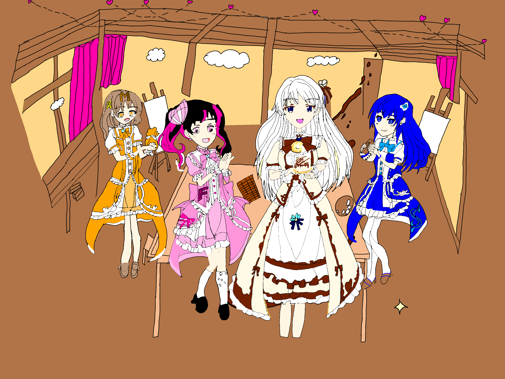

🚪 玄関(index)
🏛️ 宝物庫(ポータル)
PROGRAM
🎨 CGエリア
MUSIC
小説
■ 七色同盟 (Seven Colors Archive)
かつて「六色同盟」と呼ばれた絆は、色の根源として特別視されていた宇宙色を迎え入れ、
今は互いに「対等」な存在として、新たなる七色の歴史を刻み始める。
【共演】白の一族 ＆ 赤の一族
白と赤、二つの血統が並び立つ、変わらぬ絆の記録。
関連エリア：
白
赤
【共演】バレンタイン in 美術部アトリエ
白の一族、青の一族、そして無色血のメンバーが集うバレンタインのひとコマ。色の枠を超えた穏やかな交流の記録。

関連エリア：
白
青
【特別から対等へ】宇宙色の一族 ＆ 六色同盟
かつては色の根源として超越していた存在。今は七色同盟の「対等」な一員としての記録。
関連エリア：
宇宙色
白
赤
青
黄
緑
黒
▲ このページのTOPへ戻る
← CGポータルへ戻る